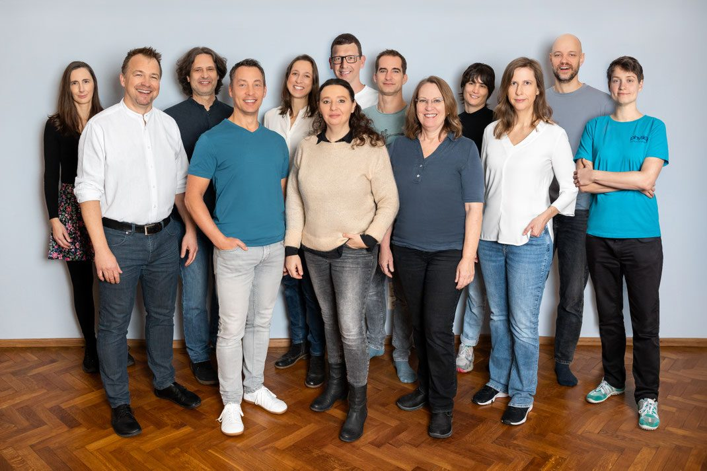
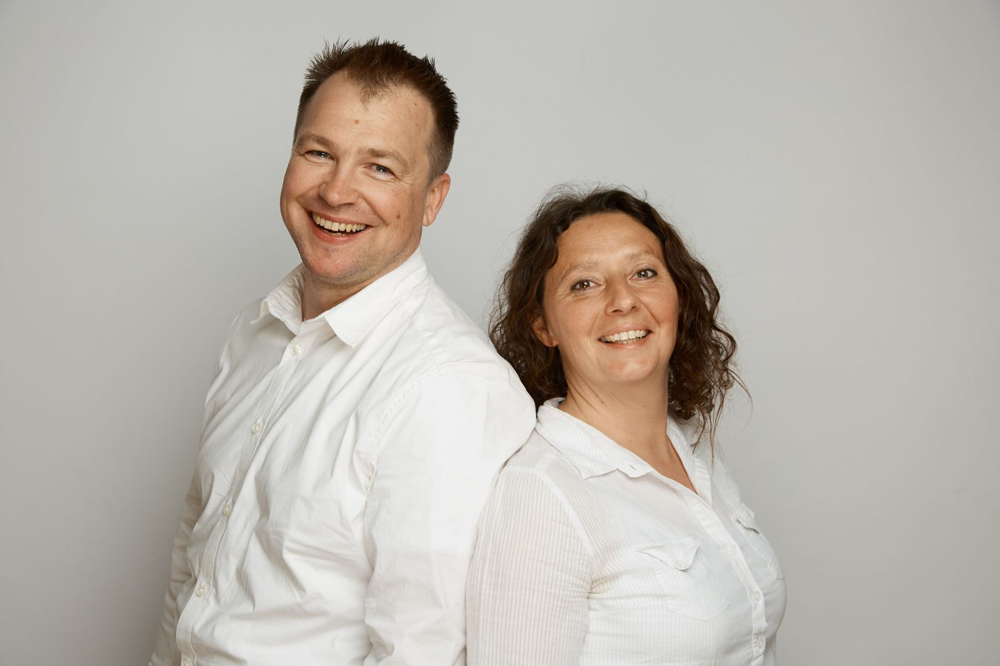
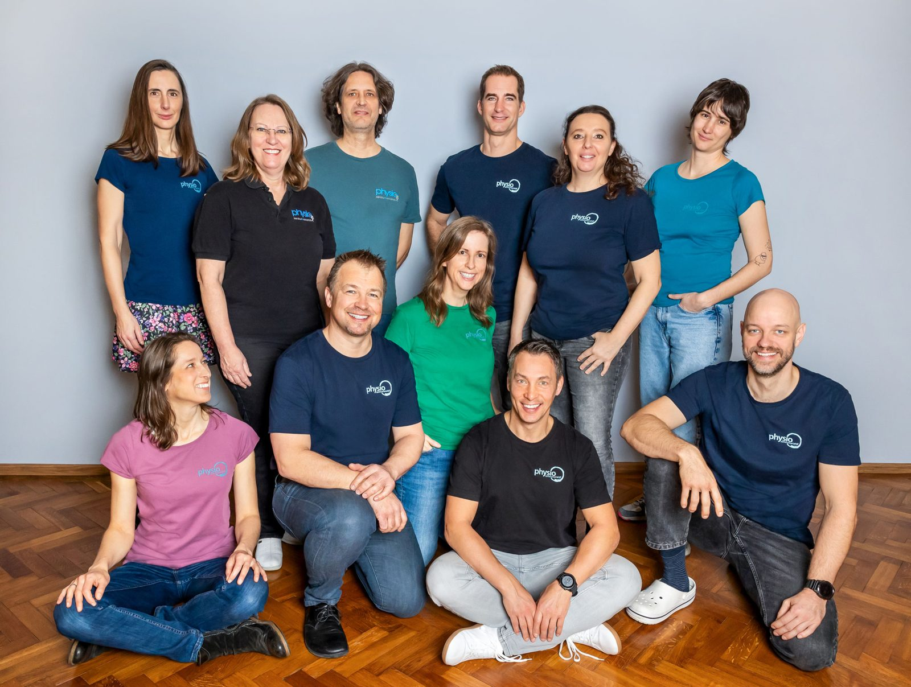
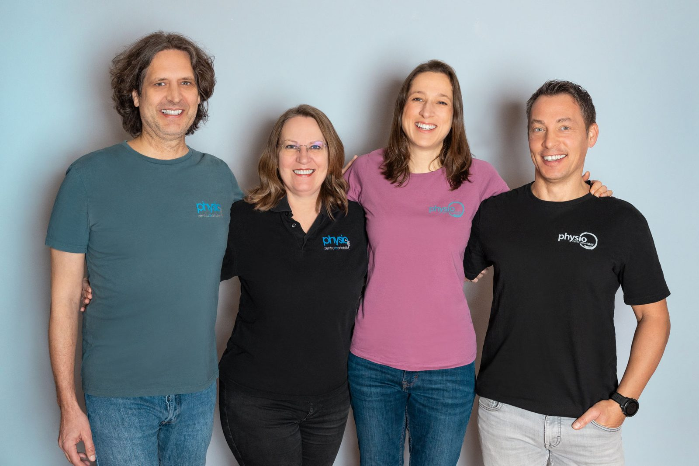
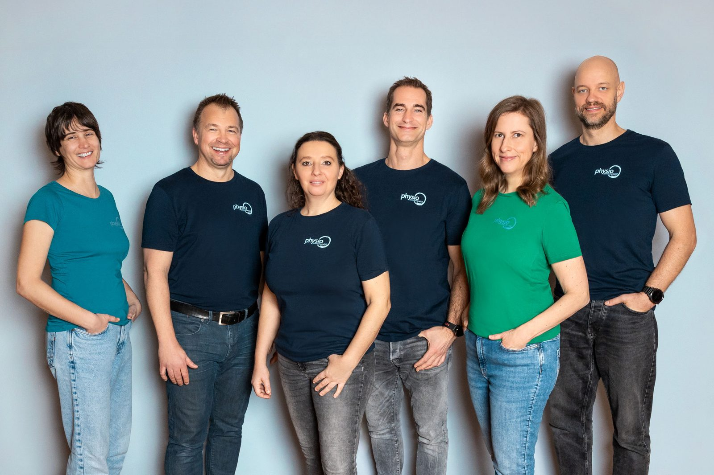
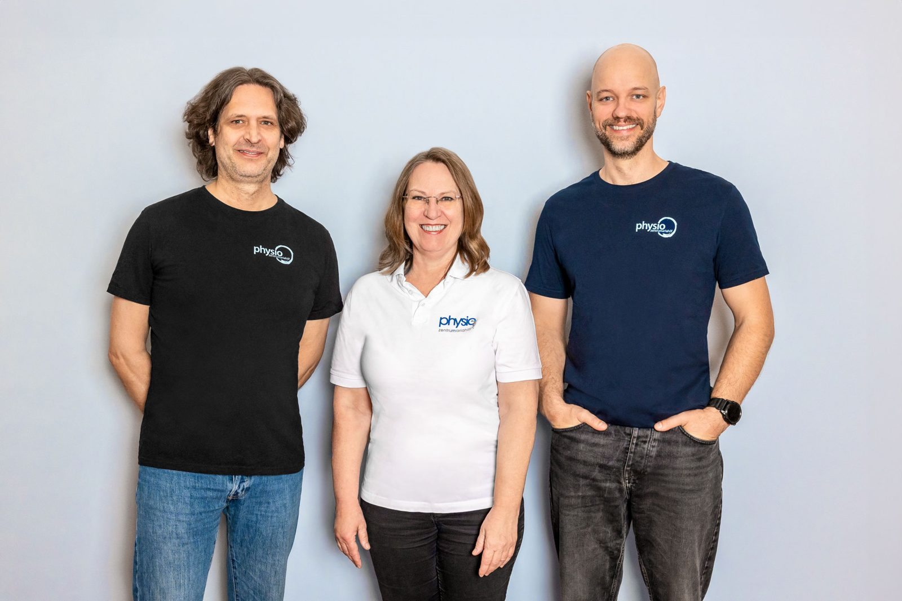
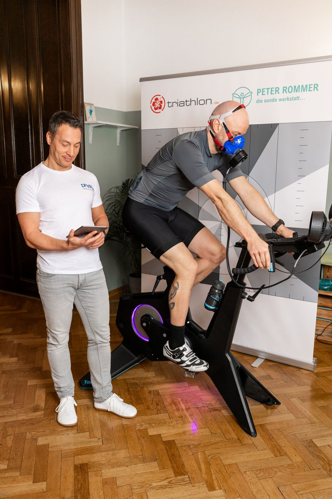
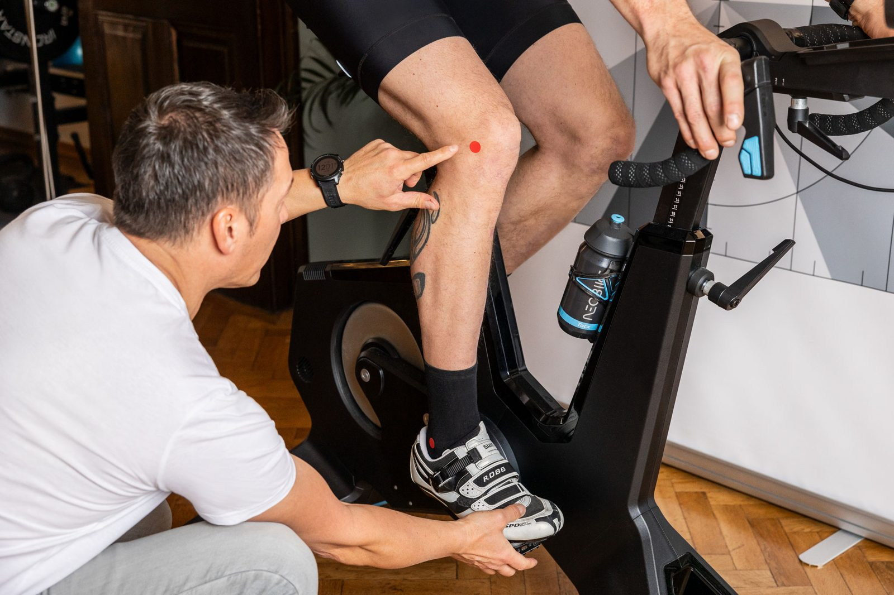

Physiotherapie
Analyse von Fehlhaltungen, Statik und Funktionsstörungen – aktive Techniken für Kraft, Stabilität und Beweglichkeit, passive Mobilisation für Gelenke und Muskeln.
Zur Physiotherapie →Wahltherapiezentrum in Wien Mariahilf
Physiotherapie, Osteopathie, Kinderosteopathie, Heilmassage und Shiatsu – seit 2009 unter einem Dach, seit 2. Mai 2024 auf der Mariahilfer Straße 29. Wir arbeiten als Wahltherapeut:innen, es gibt keine direkte Kassenabrechnung.

Was wir behandeln
Sie müssen nicht wissen, welche Methode zu Ihnen passt. Schildern Sie Ihr Anliegen – wir leiten Sie an die passende Therapeutin oder den passenden Therapeuten im Haus weiter.
Analyse von Fehlhaltungen, Statik und Funktionsstörungen – aktive Techniken für Kraft, Stabilität und Beweglichkeit, passive Mobilisation für Gelenke und Muskeln.
Zur Physiotherapie →Manuelle Behandlungsmethode auf medizinisch-wissenschaftlicher Grundlage. Ersttermin 60 Minuten, Folgetermin 45 Minuten.
Zur Osteopathie →Sanfte Behandlung nach der Geburt, bei Schädelasymmetrie, Reflux, Koliken oder Entwicklungsthemen. Ersttermin 60 Minuten.
Zur Kinderosteopathie →Dreidimensionale Stimulierung der asymmetrischen Wirbelsäulenmuskulatur inklusive Drehwinkelatmung und individuellem Übungsprogramm.
Zur Skoliosetherapie →Fordert Motorik und Kognition zugleich – ohne Klettererfahrung, für jede Altersgruppe, an einer verstellbaren Therapiekletterwand.
Zur Klettertherapie →Propriozeptive Einlagen nach Podographen- und Podoskop-Befund, Nachkontrolle nach zwölf Wochen.
Zur Podotherapie →Computergestützte Reflextherapie: Eigenfrequenzen werden ermittelt, die Behandlung stoppt automatisch im Resonanzzustand – Vorher-nachher-Vergleich inklusive.
Zum Spineliner →Klassische Heilmassage mit Spezialtechniken sowie Shiatsu – Berührung, die bewegt, am Boden auf der Matte.
Zu Massagen & Shiatsu →Mikronährstoff-Coaching, Schmerz-Coaching und Gesundheitsförderung – nach Terminvereinbarung, auch ohne Verordnung.
Zum Coaching →
Seit 2009
Marion Buresch-Neuhold und Florian Pichler haben das Physiozentrum Mariahilf 2009 gegründet. Heute arbeiten dreizehn freiberufliche Therapeut:innen unter einem Dach – Physiotherapie, Osteopathie, Manualtherapie, Atemtherapie, Heilmassage, Sportmassage, Shiatsu, Kinderphysiotherapie.
Am 2. Mai 2024 ist das Zentrum an den heutigen Standort auf der Mariahilfer Straße 29 übersiedelt: größere Räume, Therapiekletterwand, Trainingsfläche und kurze Wege zur U3 Neubaugasse.
Vom Anruf zur Therapie
Für eine physiotherapeutische Behandlung brauchen Sie eine ärztliche Verordnung. Lassen Sie diese vor Therapiebeginn bei Ihrer Krankenkasse chefärztlich bewilligen.
Telefonisch direkt bei der Therapeutin oder dem Therapeuten, per E-Mail oder über das Anfrageformular dieser Seite.
Bringen Sie die Verordnung und aktuelle Befunde mit – Operationsbericht, Röntgen, Labor, falls vorhanden. Bei Kinderosteopathie zusätzlich den Mutter-Kind-Pass.
Sie zahlen direkt und reichen die Honorarnote bei Ihrer Kasse ein. Nach Rückerstattung des Kassentarifs können Restkosten bei privater Zusatzversicherung eingereicht werden.
Terminabsagen: Bitte sagen Sie vereinbarte Termine spätestens 24 Stunden vorher ab. Nicht abgesagte Termine werden in Rechnung gestellt.
Gruppen & Kurse
Drei laufende Angebote ergänzen die Einzeltherapie – Anmeldung jeweils direkt bei der Kursleitung.
Kleingruppe zum gelenkten Atmen, Einstieg jederzeit möglich. Leitung: Robert Kriz und Florian Pichler.
25,– pro Einheit, Sozialtarif möglich.
Zehn Einheiten à 90 Minuten, dienstags 17:30–19:00. Leitung: Romana Frank.
5er-Block 90 € · 10er-Block 160 € · Drop-In 18 €
Wissenschaftlich belegtes Programm „Mit Arthrose gut leben“ mit Befund, Tests, Schulung und individuellem Training.
Begleitung: Florian Georg Pichler
Einblick






Schildern Sie Ihr Anliegen in zwei Minuten – wir melden uns mit einem Terminvorschlag bei der passenden Therapeutin oder dem passenden Therapeuten.